Remove cravos, impurezas, oleosidade e células mortas, deixando a pele mais limpa e renovada.
0+
procedimentos estéticos
+0
procedimentos realizados
0°
cuidado, acompanhamento e bem-estar
Quem cuida de você
Idamara Hekiel Paolla Kleina
Somos duas amigas que nos conhecemos na faculdade, unidas por um propósito em comum: cuidar da beleza e do bem-estar das pessoas com embasamento científico, ética e responsabilidade.
Ao longo dos anos, transformamos nossa amizade em parceria profissional e realizamos o sonho de criar uma clínica onde cada detalhe fosse pensado para acolher, transformar e valorizar a autoestima de quem nos procura.
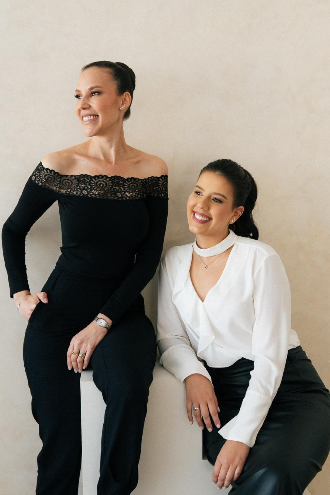
Procedimentos
Tratamentos pensados para cada fase da sua pele e do seu corpo
Ajuda a clarear manchas, melhorar vermelhidão, poros e textura da pele.
Promove renovação intensa da pele, ajudando em rugas, cicatrizes e textura irregular.
Melhora cicatrizes, poros, manchas e sinais de envelhecimento estimulando a renovação da pele.
Estimula colágeno e ajuda na firmeza da pele, com efeito lifting sem cirurgia.
Estimula colágeno por meio de microperfurações, melhorando textura, manchas, cicatrizes e linhas finas.
Tratamento voltado para clareamento de manchas e uniformização do tom da pele.
Auxilia na cicatrização, recuperação da pele, inflamações e estímulo capilar.
Aquece a pele para estimular colágeno, ajudando na flacidez e firmeza.
Reduz os pelos de forma progressiva e duradoura.
Melhora a aparência das estrias, estimulando a regeneração e o colágeno da pele.
Ajuda a melhorar a textura da pele, circulação e aspecto de "furinhos".
Auxilia na redução de gordura localizada e melhora do contorno corporal.
Estimula o couro cabeludo, fortalece os fios e auxilia no crescimento saudável do cabelo.
Massagem que ajuda a reduzir inchaço, retenção de líquidos e melhora a circulação.
Técnica suave para gestantes, ajudando a aliviar inchaço e sensação de peso nas pernas.
Aplicação de fitas terapêuticas para auxiliar na drenagem, sustentação da pele e redução de inchaços.
Clareia manchas e melhora a aparência da pele das mãos, deixando o tom mais uniforme.
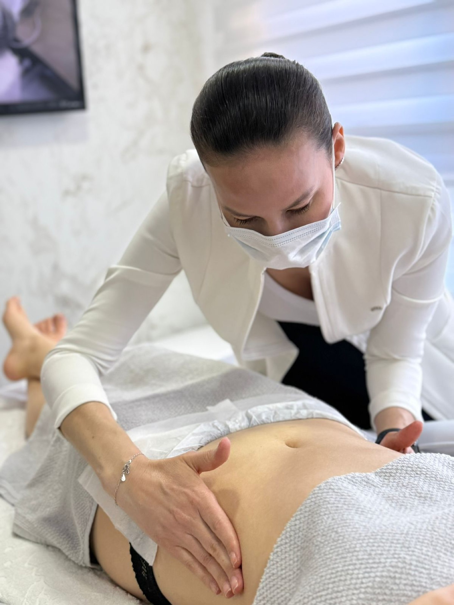
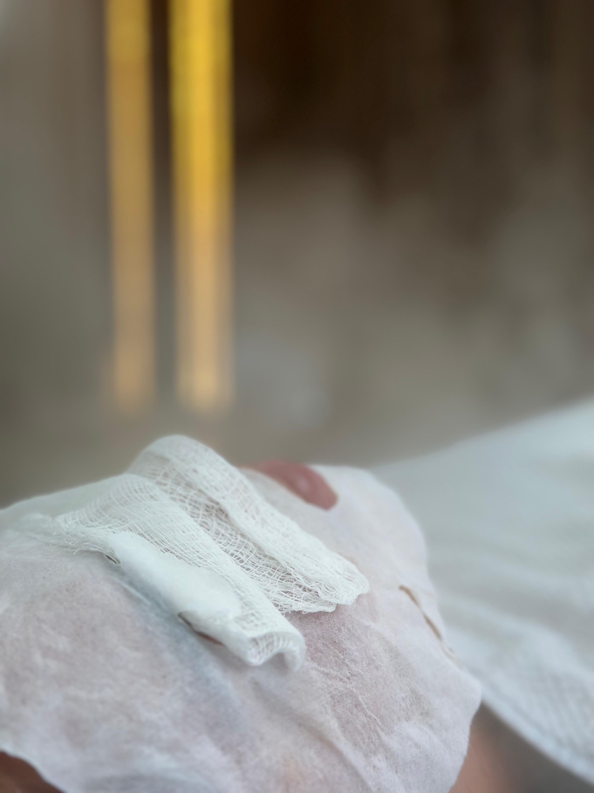
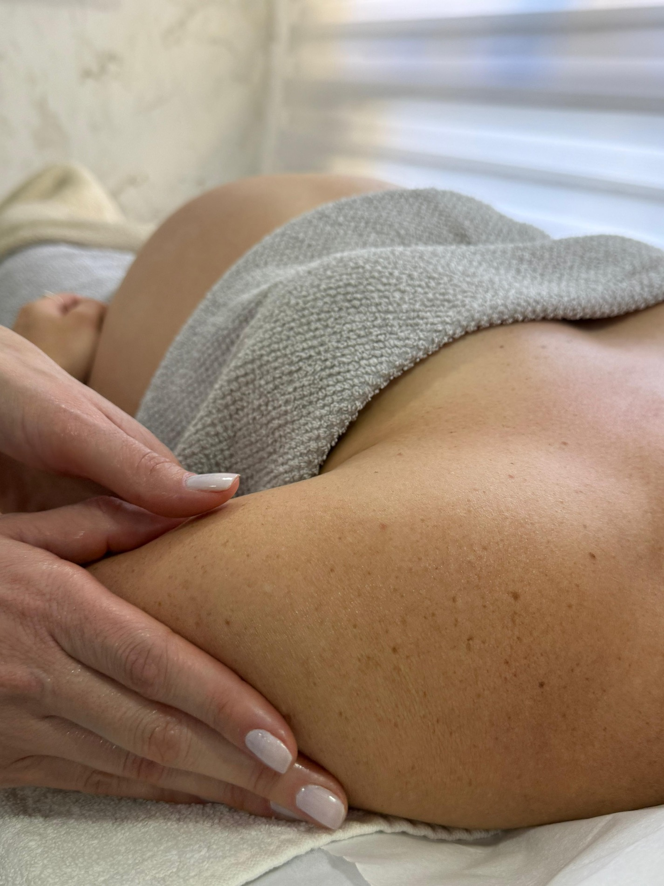
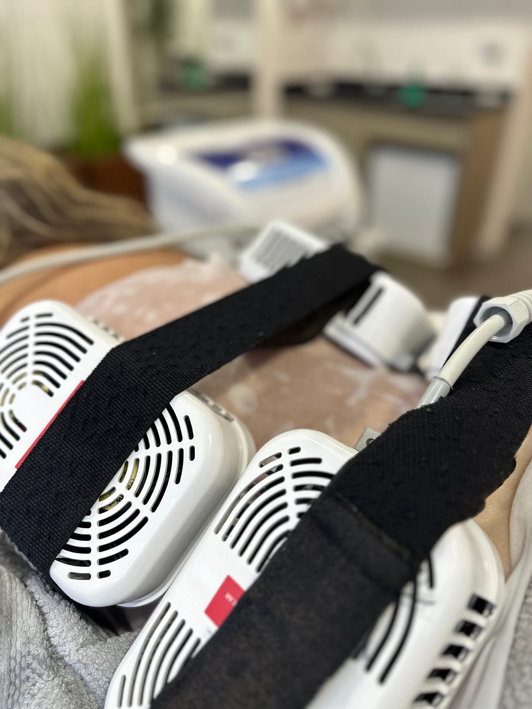
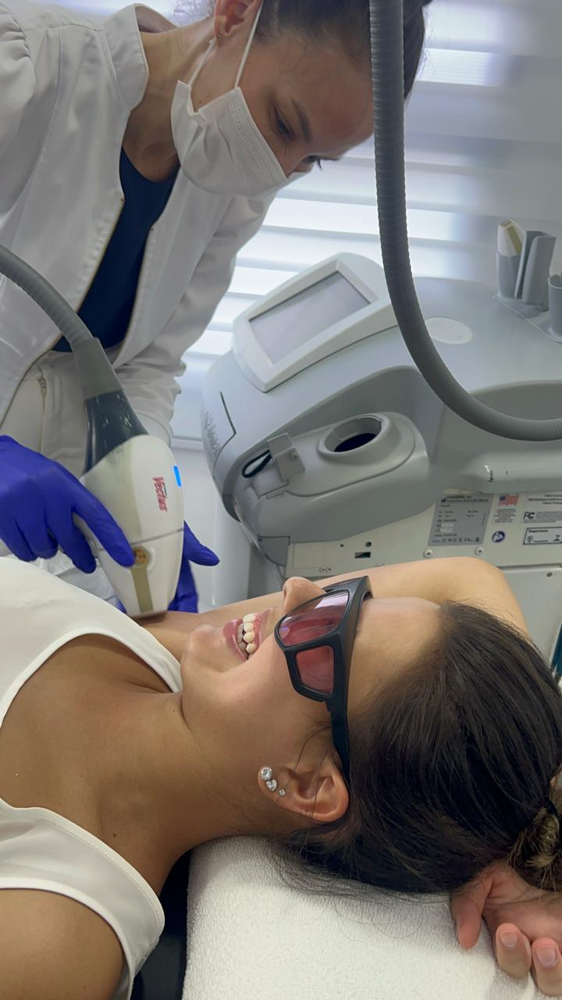
Resultados
Antes e depois com acompanhamento próximo
Resultados variam de acordo com avaliação individual e plano de tratamento.
A clínica
Um espaço claro, acolhedor e preparado para receber você
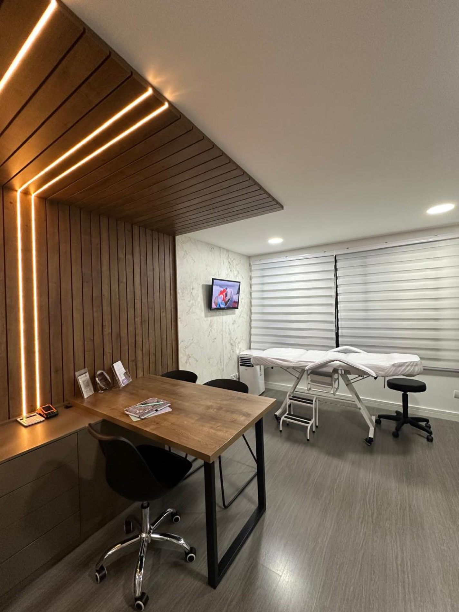
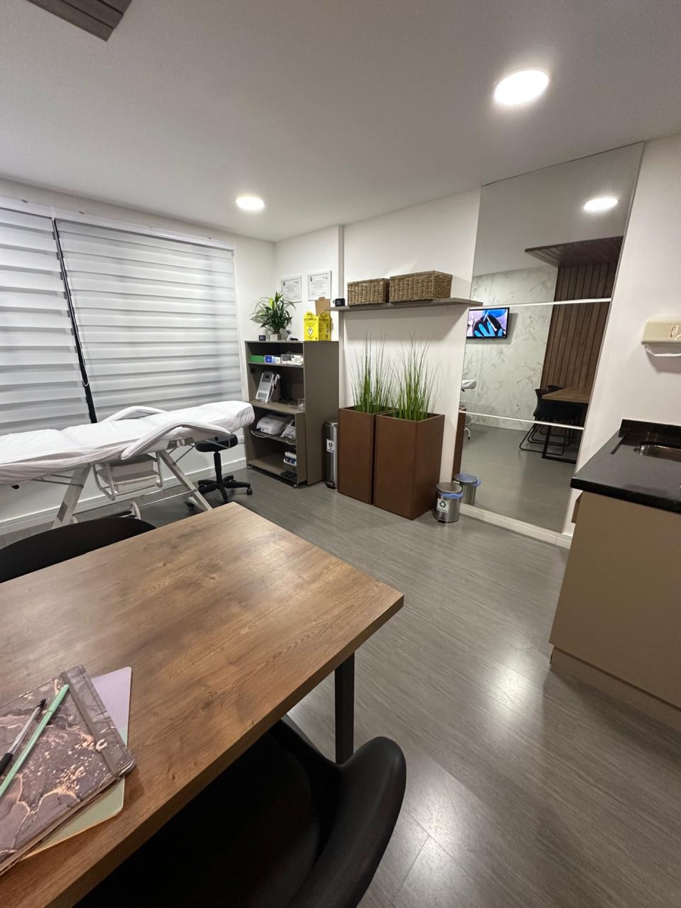
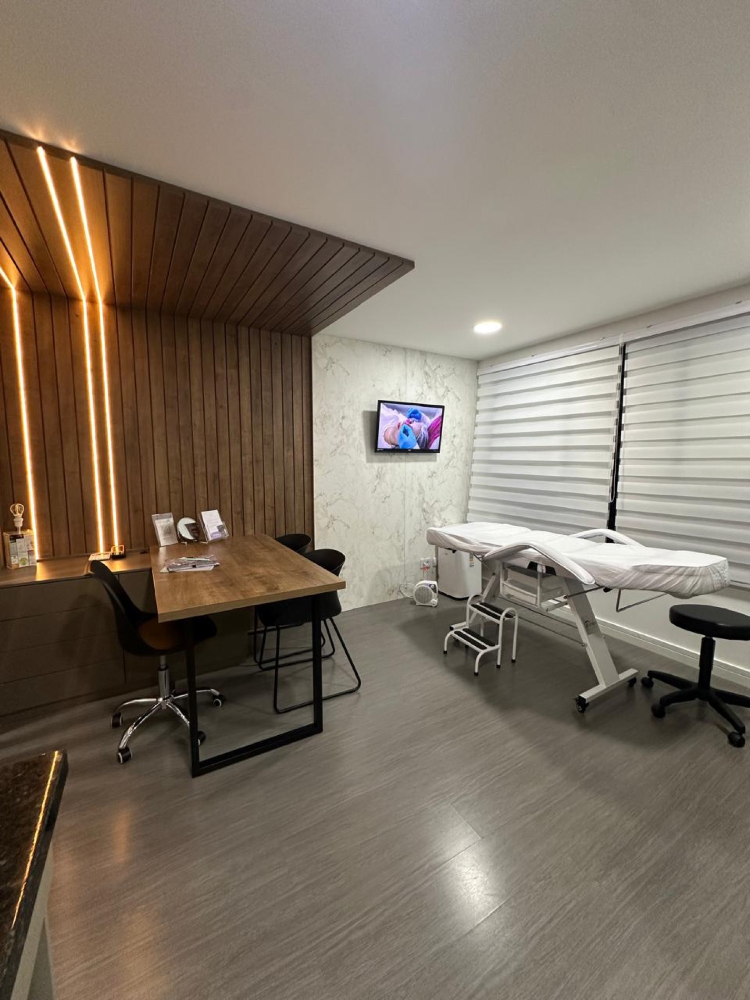
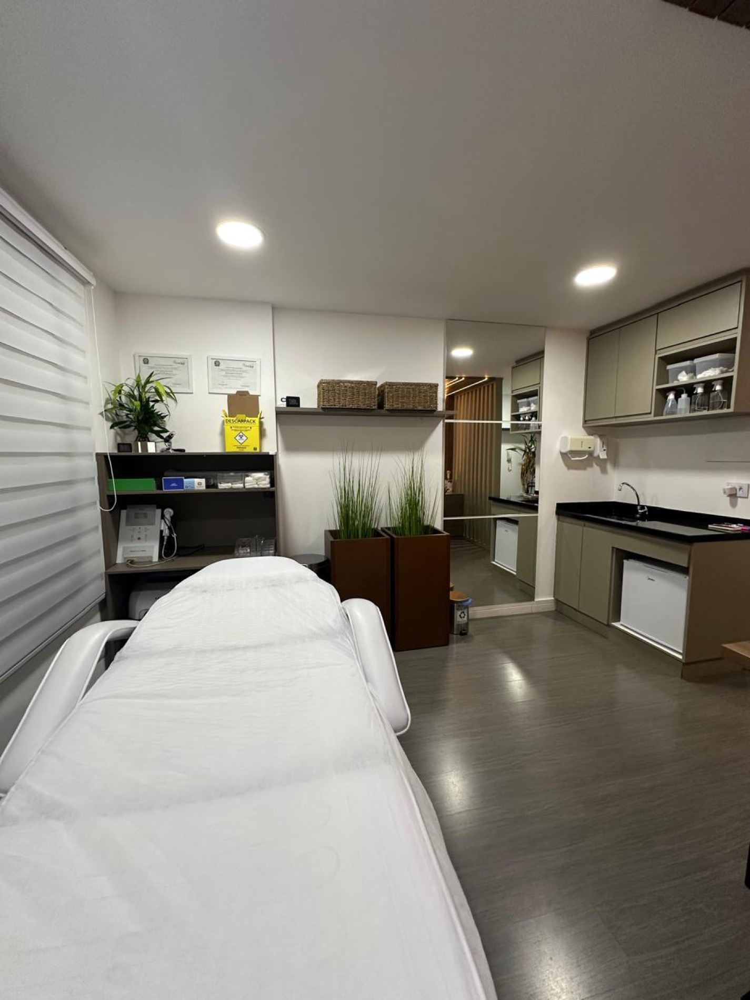
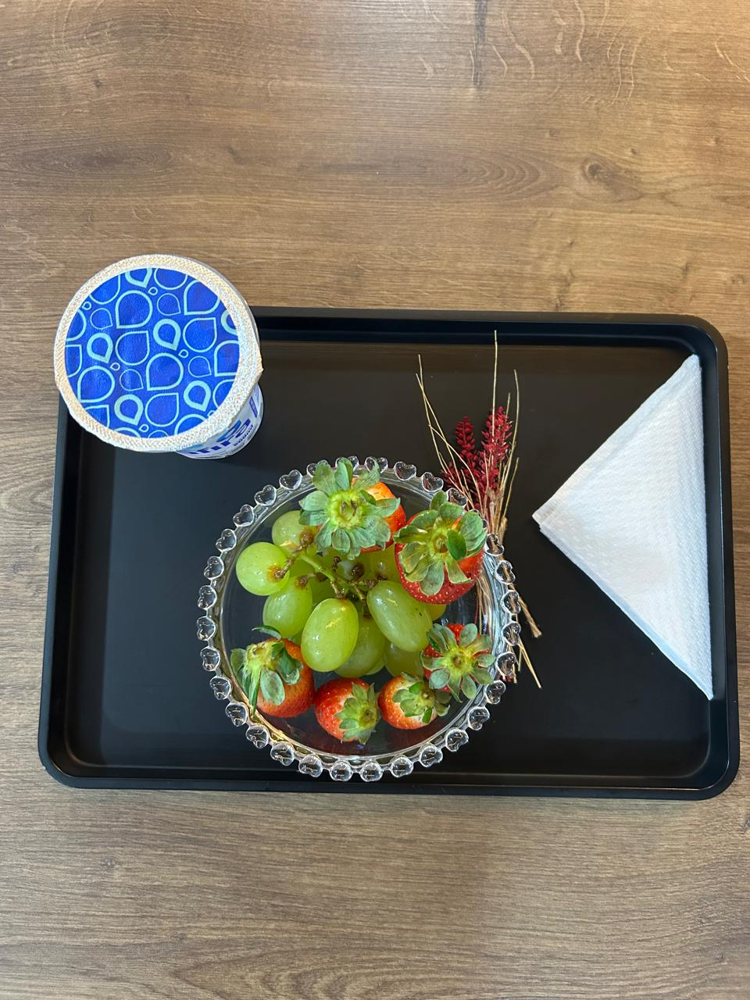
Depoimentos
O cuidado aparece nos detalhes
Agende sua avaliação
Cuidar de você pode começar hoje.
Fale com a Illa pelo WhatsApp ou acompanhe os protocolos, bastidores e resultados pelo Instagram.